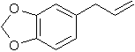

CAS: [94-59-7]
safrole [merck index]
safrole - isolation
from natural product [beilstein/crossfire]
isosafrole -
isolation from natural product [beilstein/crossfire]
"piper hispidinervum: a sustainable source of
safrole"
html, pdf
piper auritum kunth
englisch: sacred pepper, mexican pepper leaves, rootbeer plant
spanisch: hoja santa, yerba santa, acuyo
the essential oil of the leafs (0.2% in the fresh leafs)
contains the odoriferous safrole (up to 80%)
[http://www-ang.kfunigraz.ac.at/~katzer/germ/generic_frame.html?Pipe_aur.html]
journal of natural products 1985 48(2): 330
"safrole, the main component of the essential oil
from piper auritum of panama"
GUPTA, M.P., ARIAS, T.D., WILLIAMS, N.H., BOS, R., TATTJE, D.H.E.
[http://www.fao.org/docrep/V5350e/V5350e05.htm]
juniapa-hinojo
sabalero (piper auritum)
on steam distillation leaves give a mobile clear liquid with a
characteristic
odour of "root beer". yield of oil has been reported at
0.17% with a safrole
content of 70% (gupta)
hexastylis
arifolia
leaf oil 70% safrole, root oil 58% safrole
distillation of
essential oils
funct ecol 1993 7(4): 395-402
"effect of maternal light environment on seed
germination in piper auritum"
a orozco-segovia, m e sanchez-coronado, c vazquez-yanes
funct ecol 1993 7(5): 585-590
"light environment and phytochrome controlled
germination in piper auritum"
a orozco-segovia, m e sanchez-coronado
http://www.ecologia.unam.mx/Investigadores/AOrozco/aorozco.html
new phytologist 1982 92: 477-485
"phytochrome control of seed germination in two
tropical
rain forest pioneer trees: cecropia obustifolia and piper
auritum and its ecological significance"
c vazquez-yanes, h smith
[http://www.cabi-publishing.org/Bookshop/Readingroom/0851994040/4040ch36.pdf
]
econ bot 1999 53(4): 435-438 (english)
(new york botanical garden press. CODEN ECBOA5, ISSN 0013-0001)
"volatile oils of illicium floridanum and i.
parviflorum (illiciaceae) of the
southeastern united states and their potential economic
utilization"
arthur o tucker, michael j maciarello
(department of agriculture and natural resources,
delaware state university, dover, DE 19901-2277, USA)
abstract: the essential oil from leaves
and branches of cultivated illicium
floridanum is dominated by 22.53 ±2.23% linalool and 13.93 ±1.61%
linalyl acetate.
the essential oil from leaves and branches of cultivated i.
parviflorum is
dominated by 68.14 ±0.88% safrole, 13.18 ±1.01% linalool, and
11.89 ±0.87%
Me eugenol. besides the lauraceae and piperaceae, the illiciaceae
is another
natural source of safrole.
index entries: star anise (illicium
floridanum), star anise (illicium parviflorum)
[chemical abstracts 2000 132: 163499]
journal of essential oil research 2001 13(5): 332-335 (english)
allured publishing corp., CODEN JEOREG, ISSN 1041-2905
"the leaf oils of the australian species of
cinnamomum (lauraceae)"
joseph j brophy robert j goldsack paul i forster
(school of chemistry, university of new south wales, sydney 2052,
australia)
abstract: the leaf oils of the australian
species of the genus cinnamomum were
analyzed by GC and GC/MS. the results showed that the species
fall into two groups
in which one group contains arom. components, while the second
group contains only
terpenoid constituents. the first group contains c. baileyanum, c.
oliveri and one
chemotype of c. laubatii, and they produce oils rich in Me
eugenol and bicyclo-
germacrene (c. baileyanum), safrole, Me eugenol elemicin and
bicyclogermacrene
(c. laubatii), camphor, safrole and Me eugenol (c. oliveri). the
second group
producing terpenoid oils includes c. propinquum (p-cymene, b-eudesmol),
c. virens
(a-pinene, (E)-nerolidol) and a second chemotype of c. laubatii (bicyclogermacrene,
b-selinene, spathulenol and b-eudesmol).
index entries: taxonomy, chemotaxonomy,
essential oils, cinnamon,
cinnamomum baileyanum, cinnamomum laubatii, cinnamomum oliveri,
cinnamomum propinquum, cinnamomum virens
[chemical abstracts 2002 136: 196989]
majalah farmasi indonesia 2000 11(2): 103-110 (indonesian)
(fakultas farmasi UGM., CODEN MFINFF, ISSN 0126-1037)
"chemical components of essential oil of pala maba (myristica
succedanea)"
andria agusta
(lab. fitokimia, balitbang botani, puslitbang
biologi-LIPI, bogor 16122, indonesia)
abstract: morphol. of pala maba (myristica
succedanea) is close to pala (m.
fragrans), and their odor are identical. water distn. of leaves,
fruits, and
seeds of pala maba yielded 0.32, 0.03, and 2.89% of essential
oils resp. the
result of GC-MS analyses showed that the essential oils contain
characteristic
components, e.g. safrole, myristicin and elemicin, known as
hallucinogenic and
hypnotic constituents.
[chemical abstracts 2002 136: 82631]
xiangliao xiangjing huazhuangpin 2001 (4): 14-19 (chinese)
(bianjibu, CODEN XXHIAX, ISSN 1000-4475)
"present situation and prospect of exploitation
and application of plant resources of safrole"
zhiqiu liu, Jin chen, yong xu
(xishuangbanna tropical botanical garden, chinese
academy of sciences, mengla 666303, peop. rep. china)
abstract: a review on plant contg.
safrole, and development and
utilization of the safrole-contg. plant. lauraceae plant,
cinnamomum
and piper species, and their safrole-contg. essential oil were
discussed.
index entries: camphor tree (cinnamomum
camphora), cinnamomum,
cinnamomum angustifolium, cinnamomum pauciflorum, cinnamomum
petrophilum,
lauraceae, pepper (piper), pepper (piper hispidinervum),
essential oils
[chemical abstracts 2002 136: 366318]
quim nova 1999 22(5): 744-759 (portuguese)
(sociedade brasileira de quimica. CODEN QUNODK, ISSN 0100-4042)
"utilization of the safrole, principal chemical
constituent of sassafras oil,
in the synthesis of compounds active in the arachidonic acid
cascade:
antiinflammatory, analgesic and antithrombotic"
eliezer j barreiro, carlos a m fraga
(faculdade farmacia, universidade federal rio
de janeiro, rio de janeiro 21944-190, brazil)
abstract: in this review with 150 refs.
we describe the results of a research effort
developed in laboratorio de avaliacao and sintese de substancias
bioativas (LASSBio,
UFRJ) in the utilization of brazilian abundant natural product,
safrole (I), the
principal chem. constituent of sassafras oil (ocotea pretiosa),
as an attractive
synthon to access different chem. class of bioactive compds.,
such as prostaglandins
analogs, non-steroidal antiinflammatory agents and antithrombic
compds.
[chemical abstracts 1999 131: 351467]
pharm acta helv 1999 73(6): 281-292 (english)
(elsevier science b.v. CODEN PAHEAA, ISSN 0031-6865)
"synthesis and antiplatelet evaluation of novel
aryl-sulfonamide derivatives, from natural safrole"
Lima, Lidia M.; Ormelli, Claudia B.; Brito, Fernanda F.;
Miranda, Ana L. P.; Fraga, Carlos A. M.; Barreiro, Eliezer J.
(Faculdade de Farmacia, Laboratorio de Avaliacao e
Sintese de Substancias Bioativas, Universidade Federal
do Rio de Janeiro, Rio de Janeiro 21944-970, Brazil)
abstract: in the scope of a research
program aiming at the synthesis and pharmacol.
evaluation of novel possible antiplatelet prototype compds.,
exploring bioisosterism
principles for mol. design, we describe in this paper the
synthesis of new
aryl-sulfonamides derivs., structurally similar to known
thromboxane A2 receptor
antagonists. the synthetic route used to access the new compds.
described herein
starts from safrole, an abundant brazilian natural product, which
occurs in
sassafras oil (ocotea pretiosa). the results from preliminary
evaluation of these
novel aryl-sulfonamide compds. by the platelet aggregation
inhibitory test, using
rabbit PRP, induced by ADP, collagen, arachidonic acid, and U46619,
identified the
N-[2-(4-carboxymethoxyphenyl)ethyl]-6-methyl-3,4-methylenedioxyphenyl-sulfonamido
deriv. as the most active among them, presenting an IC50 value
for the
U-46619-induced platelet aggregation in rabbit platelet-rich
plasma: 329 microM.
[chemical abstracts 1999 131: 280990]
rev colomb cienc quim.-farm 1998 27: 25-29 (spanish)
(Universidad Nacional de Colombia, Facultad de Ciencias,
Departamento de Farmacia. CODEN RCQFAQ, ISSN 0034-7418)
"chemical and microbiological study of the ethanolic
extracts
of leaves and bark of Virola calophylla (myristicaceae)"
ruge o constanza; e cuca s luis, c martinez v juan
(Universidad Nacional de Colombia, Facultad de Ciencias,
Departamento de Quimica, Santafe de Bogota A.A. 14490, Colombia)
abstract: from the ethanolic ext. of the
leaves of virola calophylla were isolated
the compds. designated: hydroxyotobain, otobaene, sitosterol,
dihydro-chalcone
(2',4'-dihydroxy-4,6'-dimetoxydihydro-chalcone) and vanillin.
From the ethanolic
ext. of the bark of virola calophylla were isolated two compds.:
safrole and
methylparaben isolated substances for the first time in the
family myristicaceae.
the structures were detd. by spectroscopic methods and by
comparison with literature
data. to the ethanolic exts. of leaves and bark of virola
calophylla a preliminary
study of the antimicrobial activity was realized.
[chemical abstracts 1999 131: 92398]
flavour fragrance j 1998 13(6): 393-396 (english)
(john wiley & sons ltd, CODEN FFJOED, ISSN 0882-5734)
"essential oil of an unidentified illicium species
from ninh binh province, vietnam"
Tam, Nguyen Thi; An, Ha Lai; Muselli, Alain; Bighelli, Ange;
Casanova, Joseph
(Faculte de Pharmacie de Hanoi, Departement de Pharmacognosie,
Hanoi, Vietnam)
abstract: the chem. compn. of leaf,
branch, trunk-bark and root-bark oils of an
unidentified illicium species was investigated by several anal.
techniques (GC,
GC-MS and 13C-NMR). thirty-six constituents were identified. the
leaf and branch
oils were characterized by a large amt. of linalool (30.3 and 33.4%),
while safrole
was the major compd. of the trunk- and root-bark oils (60.2 and
77.7%, resp.). in
addn. to phenotypic and genetic parameters, the compn. of the
essential oil could be
a factor to be considered in detg. the plant taxonomy of this
species of illicium,
discovered in ninh binh province (north vietnam).
[chemical abstracts 1999 130: 279254]
synth commun 1999 29(2): 263-273 (english)
(Marcel Dekker Inc., CODEN SYNCAV, ISSN 0039-7911)
"synthesis of piperamides and new analogs from
natural safrole"
De Araujo-Junior, Joao X.; Barreiro, Eliezer J.;
Parente, Jose P.; Fraga, Carlos A. M.
(Laboratorio de Avaliacao e Sintese de Substancias Bioativas
(LASSBio), Faculdade de Farmacia, Universidade Federal do
Rio de Janeiro, Rio de Janeiro 21944-970, Brazil).
abstract: a new synthetic route starting
from safrole, a natural product
obtained from the brazilian plant ocotea pretiosa, for the prepn.
of
amides I (X = CH2, O, S) in 25-32% overall yields was described.
[chemical abstracts 1999 130: 267589]
int j food sci technol 1998 33(3): 215-223 (english)
(blackwell science ltd, CODEN IJFTEZ, ISSN 0950-5423)
"high performance liquid chromatography analysis of
nutmeg and mace
oils produced by supercritical CO2 extraction - comparison with
steam-
distilled oils - comparison of east indian, west indian and
papuan oils"
Ehlers, Dorothea; Kirchhoff, Jolanta; Gerard, Dieter; Quirin,
Karl-Werner
(Technische Fachhochschule Berlin, Fachbereich V, Studiengang
Lebensmitteltechnologie, Berlin D-10785, Germany)
abstract: Nutmeg and mace oils, produced
by supercrit. CO2 extn., are now
increasingly traded. Unlike the steam-distd. oils, no information
about their
compn. is published. Supercrit. CO2 nutmeg and mace exts. from
the East Indies,
West Indies and Papua were analyzed by HPLC for myristicin,
safrole, elemicin,
eugenol, methyleugenol, isoeugenol, methylisoeugenol,
methoxyeugenol and
isoelemicin, and were very similar to steam-distd. oils from the
same batch. East
Indian, West Indian and Papuan oils displayed clear differences
in their compn. and
could be clearly characterized by HPLC. The dominating arom.
ether in the East
Indian oils was myristicin, in West Indian elemicin and in Papuan
safrole.
[chemical abstracts 1999 130: 236633]
j essent oil res 1998 10(6): 607-612 (english)
(allured publishing corp, CODEN JEOREG, ISSN 1041-2905)
"chemical segregation of progeny of camphor trees
with high
camphor c.q. linalool content"
Van Khien, Pham; Chien, Ho Trung; Dung, Nguyen Xuan;
Leclercq, Antoine X.; Leclercq, Piet A.
(Hanoi College of Pharmacy, Hanoi 10 000, Vietnam)
abstract: The propagation of open
pollinated seed from two camphor trees with a high
camphor and linalool content, resp., yielded 115 progeny. The
chem. compn. of the
leaf oils of these trees was analyzed by a combination of
capillary GC and GC/MS.
Four chemotypes could be distinguished among the 57 trees
cultivated from a single
mother tree rich in camphor [Cinnamomum camphora (L.) Sieb.]. The
first group (23
trees) was rich in camphor (62-93%), and the second group (13
progeny) contained
1,8-cineole and a-terpineol as major compds. (30-57% and 14-25%,
resp.). Thirteen
trees yielded oils rich in (E)-nerolidol and 9-oxonerolidol (47-84%).
The oils of
eight other trees also contained (E)-nerolidol and 9-oxonerolidol
(22-36%) but
contained higher proportions of safrole (30-70%). The leaf oils
of 58 individual
trees propagated from another mother tree which was rich in
linalool [C. camphora
(L.) Sieb. var. linaloolifera], indicated the presence of six
chemotypes. Most of
the progeny, 33 trees, contained oils rich in linalool (72-96%),
and seven trees
yielded oils contg. camphor as major constituent (70-86%). The
oils from eight
trees contained mainly (E)-nerolidol and 9-oxonerolidol (61-91%),
while those from
six progeny contained a mixt. of camphor (19-71%) and linalool (14-72%).
Three
trees yielded oils rich in 1,8-cineole (54-56%), b-pinene (16-24%)
and a-terpineol
(9-11%). The oil of one tree was characterized by the significant
presence of
linalool (38%), 1,8-cineole (36%) and b-pinene (11%).
[chemical abstracts 1999 130: 194289]
zhongguo zhongyao zazhi 1998 23(4): 215-217 (chinese)
(Zhongguo Yaoxuehui Zhongguo Zhongyi Yanjiuyuan
Zhongya Yanjiuso, CODEN ZZZAE3, ISSN 1001-5302)
"study on quality standards of processed nutmeg"
Jia, Tianzhu; Xia, Fan; Wang, Zhonghai; Zhu, Jixuan; Li, Shuhua
(Liaoning College of TCM, Shenyang 110032, Peop. Rep. China).
abstarct: The quality stds. of nutmeg (Myristica
fragrans Houtt.) and its processed
products were studied in following aspects as volatile oil
content, ext. detn.,
moisture content, microscopic characteristics, with thin-layer
chromatog. and so on.
The main components of Myristica fragrans Houtt. were myristicin,
safrole, eugenol,
Me eugenol and Me isoeugenol, and Myristica fragrans Houtt. from
different places
contained different amts. of above components.
[chemical abstracts 1999 130: 122155]
afinidad 1998 55(477): 363-368 (spanish)
(asociacion de quimicos del instituto quimico de sarria,
CODEN AFINAE, ISSN 0001-9704)
"in vitro matrix model for the evaluation of
insecticidal activity of
piper auritum leaves (piperaceae)"
Saez, J.; Granados, H.; Moreno, M. E.; Pelaez, C. A.
(Laboratorio de Qumica de Plantas Columbianas, Deparatmento de
Qumica,
Facultad de Ciencias Exactas y Naturales, Universidad de
Antioquia,
Medellin A.A. 1226, Colombia)
abstract: We present a study based on a
matrix statistical model to evaluate the
insecticidal activity of different polarity exts. of P. auritum
leaves on the biol.
model Drosophila melanogaster. Fractioning of the dichloromethane
ext., which
showed high activity, allowed the isolation and identification of
safrole as the
responsible compd. of the activity. The matrix statistical model
is useful to det.
the percentages of mortality as a dependence of the concn. and
time, opposed with
the traditional models in which the time is considered const.
when the active doses
are detd.
[chemical abstracts 1999 130: 120900]
j braz chem soc 2000 11(4): 371-374 (english)
(Sociedade Brasileira de Quimica, CODEN JOCSET, ISSN 0103-5053)
"synthesis of a new strigol analogue from natural
safrole"
De Lima, Marco Edilson F.; Gabriel, Andre Jose A.; Castro, Rosane
N.
(Universidade Federal Rural do Rio de Janeiro, Departamento
de Quimica, ICE, Seropedica 23.851-970, Brazil)
abstract: safrole, isolated from
sassafraz oil (ocotea pretiosa, benth), has been
used as starting material in the synthesis of a new strigol
analog (I) which is
active as germination stimulant. I was obtained as a mixt. of
epimers at C2' which
could be sepd. by high-performance liq. chromatog.
[chemical abstracts 2000 133: 362853]
ernaehrung (vienna) 2000 24(9): 366-369 (german)
(Fachzeitschriftenverlagsgesellschaft mbH, CODEN ERNRDC, ISSN
0250-1554)
"analysis and quality control of essential cinnamon
oils
(bark- and leaf oils) of different origin using GC, GC-MS and
olfactometry - determination of the coumarin and safrole content"
l jirovetz, g buchbauer,r eberhardt
(Institut fur Pharmazeutische Chemie der Universitat Wien, Vienna
A-1090, Austria)
abstract: In total, 15 essential oil
samples of the species Cinnamomum (Lauraceae)
from various origin were investigated using gas chromatog.-spectroscopic
(GC/FID and
GC/MS) and olfactoric methods. The objective of these analyses
was the detn. of the
content of (E)-cinnamaldehyde (main compd. of cinnamon bark oils),
eugenol (main
compd. of the cinnamon leaf oils), o-methoxycinnamaldehyde and
cinnamyl acetate as
well as of the crit. components coumarin and safrole in order to
make statements
about the quality (pharmacopoeia-quality) and the legal (EU aroma-directice
88/388/EEC inclusively the new regulations of max. limits in
annex II) use of these
oils. Four com. available essential cinnamon bark oils and three
essential cinnamon
leaf oils were found to be unobjectionable and can be used as
aroma in foodstuffs
and beverages as well as in pharmaceutical prepns.
[chemical abstracts 2000 133:251414]
j sci food agric 2000 80(7): 1126-1137 (english)
(John Wiley & Sons Ltd, CODEN JSFAAE, ISSN 0022-5142)
"miscellaneous phenols in foods and beverages
- nature, occurrence and dietary burden"
michael n clifford
(School of Biological Sciences, University of Surrey, Surrey GU2
5XH, UK)
abstract: A review with 150 refs. Some
phenols are of restricted botanical
occurrence (e.g., arbutin) whereas others are widespread minor
components (e.g.,
coumarins, phenylpropanoids). A few occur at comparatively high
levels in certain
commodities (e.g., eugenol in cloves). Some have been little
studied (e.g.,
phlorotannins) whereas others have been extensively studied
because their
consumption (e.g., safrole) or topical contact (e.g., psoralen
and the urushiols)
has long been assocd. with adverse effects. Some are permitted
food additives
(e.g., cochineal, cinnamoylmethanes), whereas permission to use
some others (e.g.,
coumarin, alkannet and safrole) has been withdrawn due to
evidence of adverse
effects. Some of these phenols are advocated as natural remedies
(e.g., eugenol or
capsaicins) or dietary supplements (e.g., methoxypsoralen). It is
a cause for
concern that the margin of safety between a safe dose and the min.
dose producing
significant adverse effects is narrower in some cases than would
be tolerated for a
food additive (e.g., psoralen). For others such as the
alkenylresorcinols,
capsaicins, and phlorotannins, little or nothing is known about
the burden, metab.
and biol. effects.
[chemical abstracts 2000 133: 103906]
"Naturally Occurring Carcinogens of Plant Origin"
- Toxicology, Pathology and Biochemistry"
ISBN 4-06-202193-5
part from the book content-list:
7. Safrole
7.1 Chemical properties, natural occurence and use of safrole
complete book content-list at: http://www.kspub.co.jp/95-4.html
quimica nova 1987 10(3): 200-204 (portuguese)
"especies de piper da amazonia ricas em safrol"
("species of piper of the amazon region rich in safrole"
)
j g s maia, m l da silva, a i r luz, m d g b zoghbi, l s ramos
abstract: the essential oils of piper
hispidinervium and p. callosum from amazon
, rich in safrole (98 an 64%, respectively), are proposed as
substitutes of the oil
of ocotea pretiosa, the sassafras tree comercialy explored in the
state of santa
catarina, now in extinction stage.
abstract: the oil of a variety of ocotea pretiosa was
examnd. the physiochem.
properties of the essent. oils, the yields of oil, safrole, and camphor
amt. in
different parts of the tree and of the leaves are reportetd.
Cf. CA 55, 18019e.
[chemical abstarcts 1961 55: 21489h]
perfume essent oil rec 1961 52: 411
"the essential oils of the sassafras laurels.
III. the safrole-cinnamic aldehyde type of sassafras laurel."
t r m molan
anales real acad farm 1990 561, 49-54
"safrofe: main component of essential oil of laurelia sempervirens
(r. & p.)"
tul. from the bio-bio area (chile).
m montes, l valenzuela, t wilkomirsky
j org chem 1948 13(3): 443-446
"investigation of the chemical constituents of brazilian sassafras
oil"
michael j. hickey
zhongguo zhongyao zazhi 1991 165: 275-278
"determination of myristicin and safrol in the volatile oil of
semen myristicae and its processed products by TLC-scanning"
t. z. jia, k. h. cao, c. g. yuan, q. b. fu
http://www.lycaeum.org/drugs.old/other/toxic/Drug-Biblio.html
agric food chem, 2001 49(6): 3106-3112
"flavonoid (myricetin, quercetin, kaempferol,
luteolin, and apigenin)
content of edible tropical plants"
k h miean, s mohamed
the above article mentions:
seven phenols were identified in p. betel flowers.
safrole was the major phenol, followed by hydroxychavicol,
eugenol, methyl eugenol, isoeugenol, flavone, and quercetin (35).
(35)
j chin agric chem soc 1990 31: 623-632
"analysis of the phenolic compound in betel quid"
k w chin, h l sun
"Flavours and fragances of plant origin"
NON-WOOD FOREST PRODUCTS 1
FAO - Food and Agriculture Organization of the United Nations
M-37, ISBN 92-5-103648-9, (c) FAO 1995
Chapter 2 - CINNAMOMUM
OILS (INCLUDING CINNAMON AND CASSIA)
Chapter 3 - SASSAFRAS
OIL
APPENDIX 1 - BASIC PRINCIPLES OF STEAM DISTILLATION
planta med 1995 61(6): 574-575
"chemical composition of essential oil from the root
bark of sassafras albidum"
d. p. kadeem, d. a. gage
abstract: the root bark of sassafras
albidum (nuttall) nees (lauraceae) was extracted
at room temperature with hexane and chloroform as solvents. The
isolated essential oils
were analyzed with GC and GC/MS. thirty compounds were
identified, nine of which have
not been previously reported from this species. the major
compounds were safrole (85%),
camphor (3.25%), and methyleugenol (1.10%). ten sesquiterpenes
were also identified.
j aoac int 1997 80(5): 1023-8
"liquid chromatographic determination of safrole in
sassafras-derived herbal products"
Carlson M, Thompson RD.
abstract: A liquid chromatographic (LC)
method was developed for determining safrole in
herbal products derived from sassafras (Sassafras albidum), as
well as related compounds
such as isosafrole and dihydrosafrole. The procedure involves
solvent extraction and
isolation of analyte by reversed-phase LC with UV detection at
235 nm. Safrole is resolved
from related compounds and other sample constituents including
thymol, a component of thyme.
A linear concentration range of 0.003-0.200 mg/mL was obtained
for safrole, isosafrole, and
dihydrosafrole. Limits of detection (LOD) and quantitation (LOQ)
were e0.0015 and 0.0051
micrograms/mL for safrole, 0.0018 and 0.0061 micrograms/mL for
isosafrole, and 0.0038 and
0.0125 micrograms/mL for dihydrosafrole, respectively. Intraday
relative standard deviations
(RSDs) for safrole (n = 5) from various samples ranged from 1.30
to 5.39% at analyte levels
of 0.01-1.5%. Safrole contents of 26 samples including root bark
powder, leaves, oils, tea
concentrate, herbal extract tinctures, and herbal powder capsules
ranged from < LOD for most
leaf samples to 92.4% for an oil. Recoveries of safrole from
fortified samples ranged from
83.6% for an oil to 117.2% for a tincture preparation. Safrole
contents of 0.09-4.66 mg/cup
were found for brewed teas prepared from sassafras root bark
powders and tinctures.
arzneimittelforschung 1968 18(12): 1618 (german)
"on the knowledge of water steam distillate of the
leaves of
hamamelis virginiana l
3. on the isolation and identification of safrole"
w messerschmidt
patent CN1281637, 2001-01-31
"cinnamomum subavenium tissue culture and quick
reproduction method"
HU SHILIN, ZHANG CUNXU, ZHAO QIZHONG; CHONGQING XIDUN INDUSTRY CO
LT
abstract: the cinnamomum subavenium
tissue culture and rapid propagation method
is characterized by that it uses the stem-eye, lateral bud and
generating tissue, etc. as
explant, and respectively cultures themin adventitions bud
differentiation induction culture
medium, budding propagation culture mudium and rooting culture
medium to make rapid
propagation and obtain complete test-tube plantlet, then the test-tube
plantlet is
transplanted in vermiculite, pearlite, river sand and humus soil
in green-house, after one
month it can be planted in the field. said invention can quickly
implement mass
propagation of cinnamomum subavenium saplings with high safrole
content and good
material quality, and can implement industrial production of
cinnamomum subavenium.
anal
chem 1948 20(3): 248-249
"determination of safrole in oil of ocotea cymbarum
- a cryoscopic method"
ANTHONY J. SHUKIS, HERMAN WACHS
Dodge & Olcott, Inc., Bayonne, N . J.
abstract: a cryoscopic method employing
congealing temperatures has been
developed for the determination of safrole in the oil of Ocotea
cymbarum of
commerce. a graph is included, by means of which the safrole
content of the oil
as determined by the mercuric chloride method, is correlated with
the congealing
temperature.
flavour and fragrance journal 2001 16(2): 113-115
"sarisan from leaves of piper affinis hispidinervum
C. DC (long pepper)"
Humberto R. Bizzo, Daíse Lopes, Rodrigo V. Abdala, Flávio A.
Pimentel,
João A. de Souza, Marcos V. G. Pereira, Lothar Bergter, Elsie F.
Guimarães
abstract: the essential oil obtained from
the leaves of piper affinis hispidinervum C. DC
was analysed by GC- MS. sixteen substances were identified,
corresponding to 98.9% of the
oil. the major component (74.3%) was sarisan (1-allyl-2-methoxy-4,5-methylenedioxybenzene),
identified by NMR spectroscopy. safrole (18.4%) was also found in
the oil.